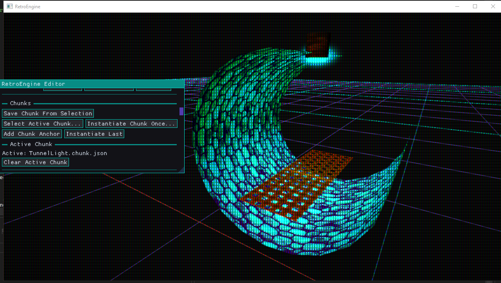

From Concept to Contact
Last dev log ended with an idea: a construction plane. My main motivation here is for some basic tools to allow for fast assembly of levels. I don't need a bunch of gizmos (yet) I already have fine control over the transforms. I just need a visible, editor-only surface where placement could start to feel physical instead of list-driven.
This week was about turning that idea into something I could actually use. And as usual, it was less about inventing new features and more about discovering where the engine still had rough edges. I'm hoping at this point that I'm finding as many flaws as fast as possible, so things become more stable over time.
The end result looks simple. A grid. A cursor. Click to place. But getting there forced RetroEngine to grow up in some important ways.
The Construction Grid Is a Calculator, Not a System
The construction grid is intentionally boring. It does not own entities. It does not track occupancy. It does not exist at runtime.
Under the hood, the grid is driven entirely by ray-plane intersection. The editor casts a ray from the camera through the mouse position, intersects it against a configurable plane in world space, and then snaps that point based on the current grid rules.
That snapped position is the only output. No entity gets created. No transforms get touched. The grid just returns a position and a normal and gets out of the way.
That distinction matters. I do not want to accidentally invent a second scene graph just for editor convenience. The grid is an authoring aid, not a data structure with any authority.
The editor exposes just enough controls to make the grid flexible without turning it into a system of its own. You can toggle snapping between cell centers and intersections, control whether placement is centered or edge-aligned, and adjust tile size, origin offset, visible extents, and major line spacing.
The grid plane itself can be aligned to different world axes, which keeps the math predictable while still supporting different construction orientations. None of this state leaks into runtime (yah!) since it only exists to make authoring faster and less error-prone.

Early tests just spawned debug cubes. Not exciting, but essential. If placement is wrong here, everything downstream is wrong too. And there is something really satisfying about seeing the even simple cubes snap into place.
Chunks Needed a Pivot, Not a Parent
The moment I tried placing real chunks onto the grid, a problem surfaced immediately. Chunks are groups of entities, but groups do not exist in the engine.
I did not want to change that. Chunks still needed to spawn as plain entities with no hidden hierarchy. But placement needs a single point of reference.
The solution was an explicit chunk anchor. Not a parent. Not a container. Just a single, well-defined pivot that everything else is measured against.
Without it, every chunk would be ambiguous. Placement would depend on selection order, bounding boxes, or hidden heuristics. With an anchor, placement becomes deterministic. The chunk knows exactly where “zero” is supposed to be.
The editor now offers controls to save a chunk from selection, select an active chunk, instantiate a chunk once, add a chunk anchor, and display the active chunk:

The anchor is not instantiated when the chunk is placed. It is serialized as metadata and discarded after spawn. Once the entities are in the scene, they are just normal entities again.
That distinction matters. Chunks help with reuse, but they do not introduce a new runtime concept.
Live Previews Are Where Things Got Real
Once chunks could be placed, and the anchors put them in the right spot, the next obvious problem appeared. Clicking blind is not fun.
I wanted to see the chunk before committing it. Aligned to the grid. Moving with the mouse. Feeling immediate and responsive.
This is where things got harder than expected. Rendering a preview sounds trivial, but I'm still learning and Direct3D 12 does not forgive.
The preview could not mutate scene data. It could not stomp constant buffers. It could not allocate GPU resources that die before the command list finishes. All of those mistakes happened at least once during this process.
The fix was not clever. It was disciplined.
The preview renders through the exact same mesh draw path as real entities, but uses editor-reserved constant buffer slots and editor-only state. That way, the renderer never has to guess which data is safe to touch.
No scene entities are mutated. No runtime buffers are repurposed. The preview is effectively a temporary view into existing content, drawn with stricter rules than normal rendering.
The preview currently renders as an unlit version of the chunk. Ghosting and polish will come later. For now this works great and gives me a much better sense of how things might look when placed. Going with unlit initially just reads cleaner, and also makes it clear which is the preview versus which chunk already lives in the scene.
Iteration Speed, Again
With the grid, anchors, and live previews in place, chunk placement finally feels right. I addded more controls now to track and set/clear an "active chunk" which the previewer now uses. Set an active chunk. Move the mouse. Click. Keep building.
The biggest change here is that placement is no longer a destructive action. I can preview, adjust, cancel, and try again without undoing anything. That alone makes experimentation feel safer and faster.
No modal dialogs. No hidden state. No prefab graphs.
This is the same theme as the last dev log, just pushed further. The engine is still opinionated. It is still limited on purpose. But it is no longer fighting me while I work inside those limits. Now I feel like its finally starting to work FOR me.
100 Days In
This dev log also marks about 100 days of active work on RetroEngine. That number matters less as a milestone and more as a perspective shift.
Early on, everything felt fragile. One change could collapse the whole renderer. Now, changes still break things, but the breakage is localized and understandable. When something fails, it fails in the system I just touched. That was not true early on.
I feel like the "flashy" features are slowing down, but being traded for more confidence in the engine. I don't know if 100 days of intermitent work is good for the progress I've made. But I know I can see the progress from day 1 to 100 and I'm really proud of everything I've built so far. This video shows a collection of work from my first render through today:
Next
The immediate next step is rotation during placement. Seeing the preview rotate before committing it. Small feature. Big impact.
After that, some visual polish on the preview itself. Then more real scenes. As always, actual usage will decide what breaks next.
The goal is not to build a perfect editor. The goal is to keep removing friction until the engine disappears and only the work remains.
I'm hoping this section of work will wrap up soon, and I'll move on towards better game/engine structure, physics, and more. I'd love to hear from you if you are interested in using this engine one day, have questions, etc. You can reach me at ContactRetroEngine@gmail.com.